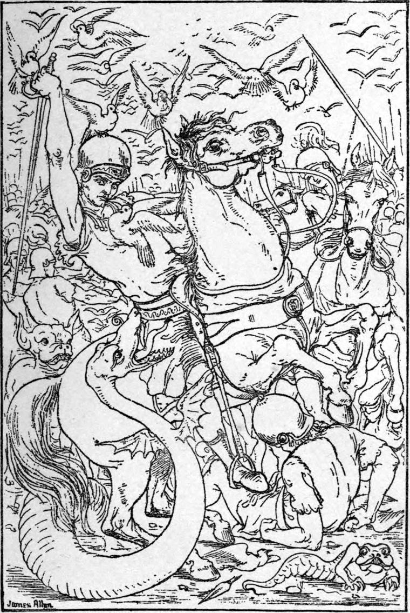
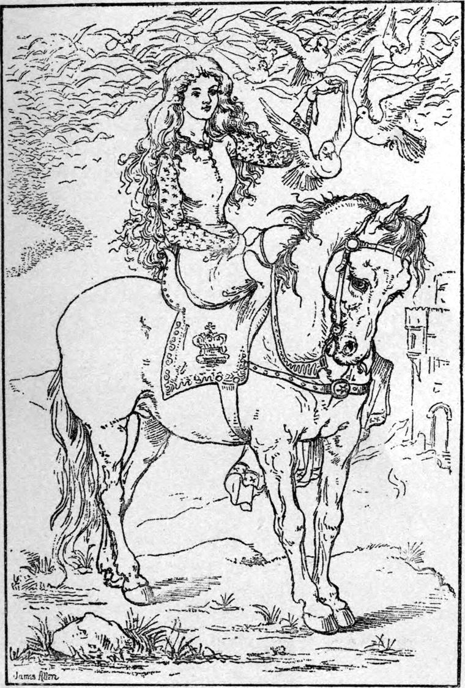

He commanded the page to blow his trumpet; and, in the strength of the moment, the youth uttered a right warlike defiance.
But the butchers and the guard, who had gone over armed to the enemy, thinking that the king had come to make his peace also, and that it might thereafter go hard with them, rushed at once to make short work with him, and both secure and commend themselves. The butchers came on first—for the guards had slackened their saddle girths—brandishing their knives, and talking to their dogs. Curdie and the page, with Lina and her pack, bounded to meet them. Curdie struck down the foremost with his mattock. The page, finding his sword too much for him, threw it away and seized the butcher's knife, which as he rose he plunged into the foremost dog. Lina rushed raging and gnashing among them. She would not look at a dog so long as there was a butcher on his legs, and she never stopped to kill a butcher, only with one grind of her jaws crushed a leg of him. When they were all down, then indeed she flashed among the dogs.
Meantime the king and the colonel had spurred toward the advancing guard. The king clove the major through skull and collar bone, and the colonel stabbed the captain in the throat. Then a fierce combat commenced—two against many. But the butchers and their dogs quickly disposed of, up came Curdie and his beasts. The horses of the guard, struck with terror, turned in spite of the spur, and fled in confusion.
Thereupon the forces of Borsagrass, which could see little of the affair, but correctly imagined a small determined body in front of them, hastened to the attack. No sooner did their first advancing wave appear through the foam of the retreating one, than the king and the colonel and the page, Curdie and the beasts, went charging upon them. Their attack, especially the rush of the Uglies, threw the first line into great confusion, but the second came up quickly; the beasts could not be everywhere, there were thousands to one against them, and the king and his three companions were in the greatest possible danger.

A dense cloud came over the sun, and sank rapidly toward the earth. The cloud moved all together, and yet the thousands of white flakes of which it was made up moved each for itself in ceaseless and rapid motion: those flakes were the wings of pigeons. Down swooped the birds upon the invaders; right in the face of man and horse they flew with swift-beating wings, blinding eyes and confounding brain. Horses reared and plunged and wheeled. All was at once in confusion. The men made frantic efforts to seize their tormentors, but not one could they touch; and they outdoubled them in numbers. Between every wild clutch came a peck of beak and a buffet of pinion in the face. Generally the bird would, with sharp-clapping wings, dart its whole body, with the swiftness of an arrow, against its singled mark, yet so as to glance aloft the same instant, and descend skimming; much as the thin stone, shot with horizontal cast of arm, having touched and torn the surface of the lake, ascends to skim, touch, and tear again. So mingled the feathered multitude in the grim game of war. It was a storm in which the wind was birds, and the sea men. And ever as each bird arrived at the rear of the enemy, it turned, ascended, and sped to the front to charge again.
The moment the battle began, the princess's pony took fright, and turned and fled. But the maid wheeled her horse across the road and stopped him; and they waited together the result of the battle.
And as they waited, it seemed to the princess right strange that the pigeons, every one as it came to the rear, and fetched a compass to gather force for the reattack, should make the head of her attendant on the red horse the goal around which it turned; so that about them was an unintermittent flapping and flashing of wings, and a curving, sweeping torrent of the side-poised wheeling bodies of birds. Strange also it seemed that the maid should be constantly waving her arm toward the battle. And the time of the motion of her arm so fitted with the rushes of birds, that it looked as if the birds obeyed her gesture, and she was casting living javelins by the thousand against the enemy. The moment a pigeon had rounded her head, it went off straight as bolt from bow, and with trebled velocity.

But of these strange things, others besides the princess had taken note. From a rising ground whence they watched the battle in growing dismay, the leaders of the enemy saw the maid and her motions, and, concluding her an enchantress, whose were the airy legions humiliating them, set spurs to their horses, made a circuit, outflanked the king, and came down upon her. But suddenly by her side stood a stalwart old man in the garb of a miner, who, as the general rode at her, sword in hand, heaved his swift mattock, and brought it down with such force on the forehead of his charger, that he fell to the ground like a log. His rider shot over his head and lay stunned. Had not the great red horse reared and wheeled, he would have fallen beneath that of the general.
With lifted sabre, one of his attendant officers rode at the miner. But a mass of pigeons darted in the faces of him and his horse, and the next moment he lay beside his commander.
The rest of them turned and fled, pursued by the birds.
'Ah, friend Peter!' said the maid; 'thou hast come as I told thee! Welcome and thanks!'
By this time the battle was over. The rout was general. The enemy stormed back upon their own camp, with the beasts roaring in the midst of them, and the king and his army, now reinforced by one, pursuing. But presently the king drew rein.
'Call off your hounds, Curdie, and let the pigeons do the rest,' he shouted, and turned to see what had become of the princess.
In full panic fled the invaders, sweeping down their tents, stumbling over their baggage, trampling on their dead and wounded, ceaselessly pursued and buffeted by the white-winged army of heaven. Homeward they rushed the road they had come, straight for the borders, many dropping from pure fatigue, and lying where they fell. And still the pigeons were in their necks as they ran. At length to the eyes of the king and his army nothing was visible save a dust cloud below, and a bird cloud above. Before night the bird cloud came back, flying high over Gwyntystorm. Sinking swiftly, it disappeared among the ancient roofs of the palace.